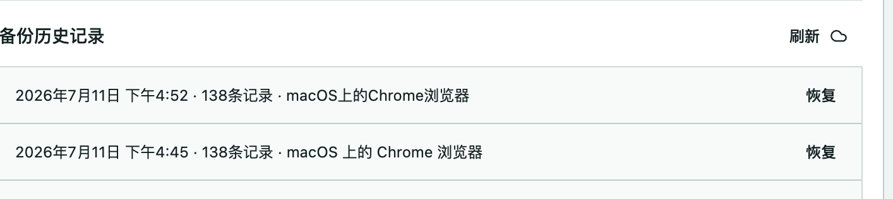

01
Find the original signal
Search by post text, author, handle, folder, tag, or research note. Browse dedicated author and link-source views.
BookmarkNest turns X and Twitter bookmarks into a searchable local research library. Organize what matters, export it when you need it, and keep a protected backup when you change devices.
Currently in public testing for Microsoft Edge. Bookmark content stays in your browser by default.

Your research, protectedX bookmarks are good at capture, not retrieval. BookmarkNest provides the local tools needed to find an idea again, collect related posts, and move useful material into the rest of your workflow.
Search by post text, author, handle, folder, tag, or research note. Browse dedicated author and link-source views.
Use folders, tags, saved views, archive, notes, bulk actions, and local organization rules without changing anything on X.
Export your working set to JSON, Markdown, or CSV. Encrypted Cloud Sync is being tested with selected testers.
BookmarkNest stores bookmark content in your browser unless you choose to export it or enable encrypted Cloud Sync. Cloud backups are encrypted in the extension before upload.
BookmarkNest is currently in public testing. Test access is free and no payments are collected. Paid plans and final pricing will be announced only after testing is complete.
Test the local organizer, search, folders, tags, archive, and JSON backup.
Not available during public testing. Final features and pricing have not been set.
Not available during public testing. Final features and pricing have not been set.
Not available during public testing. Final features and pricing have not been set.
BookmarkNest is in public testing. Test access is free, no payment details are collected, and browser store availability will be announced after testing is complete.
No. Folders, tags, notes, archive state, and exports are managed locally by BookmarkNest.
No. The extension encrypts the backup before it is uploaded. Read the privacy policy for the data flow.
Yes. JSON backup is available on Free; Markdown and CSV are included with Pro.
BookmarkNest is built for Chromium browsers, beginning with Google Chrome and Microsoft Edge.